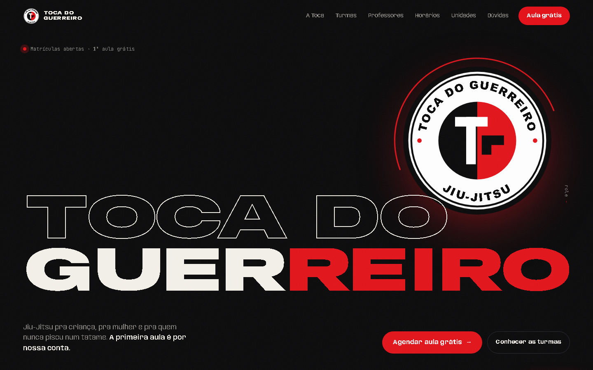
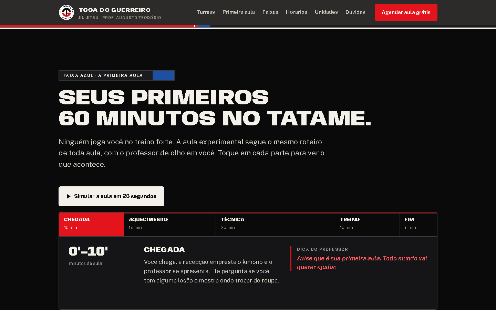
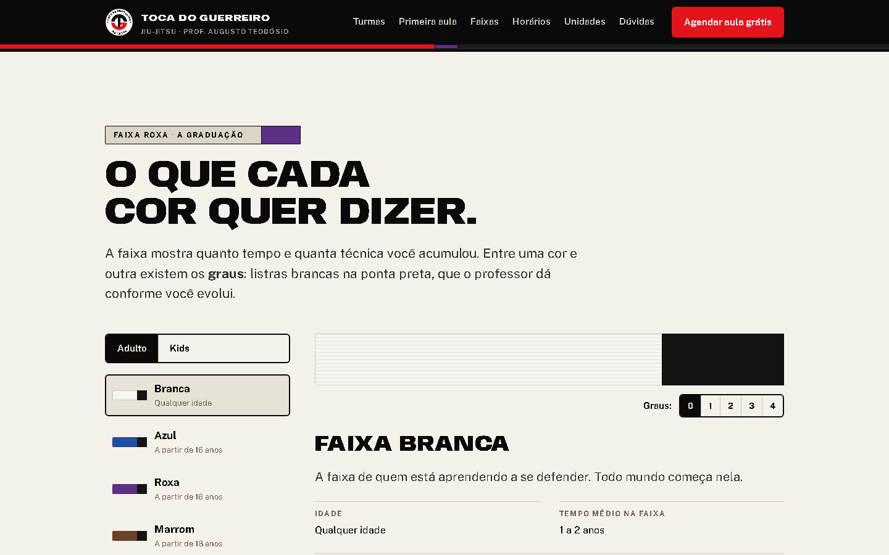
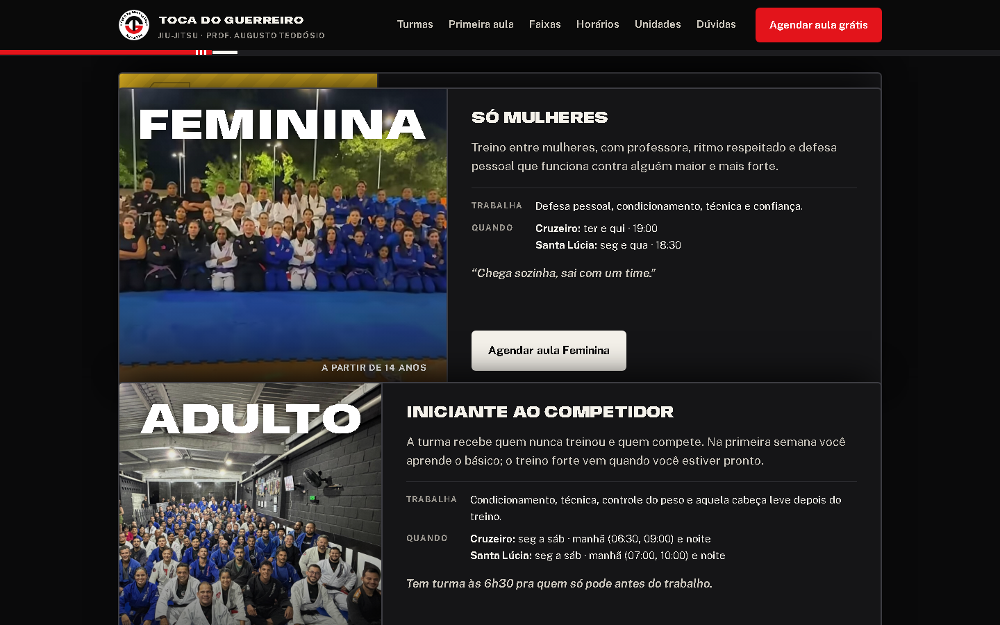
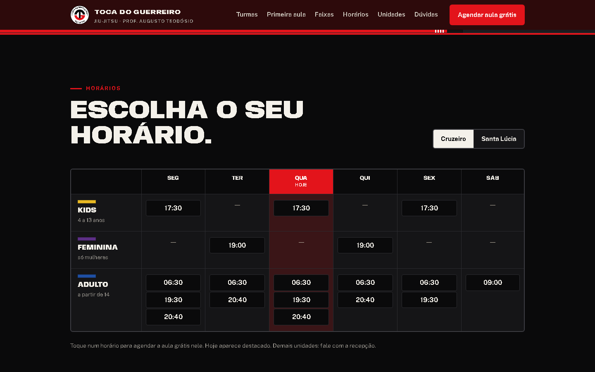
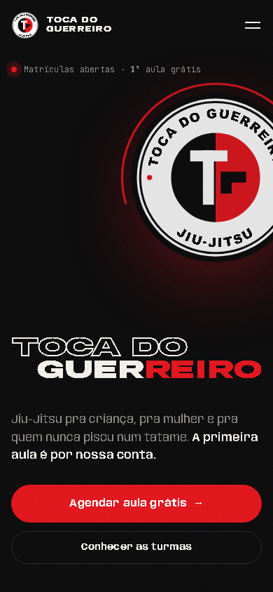
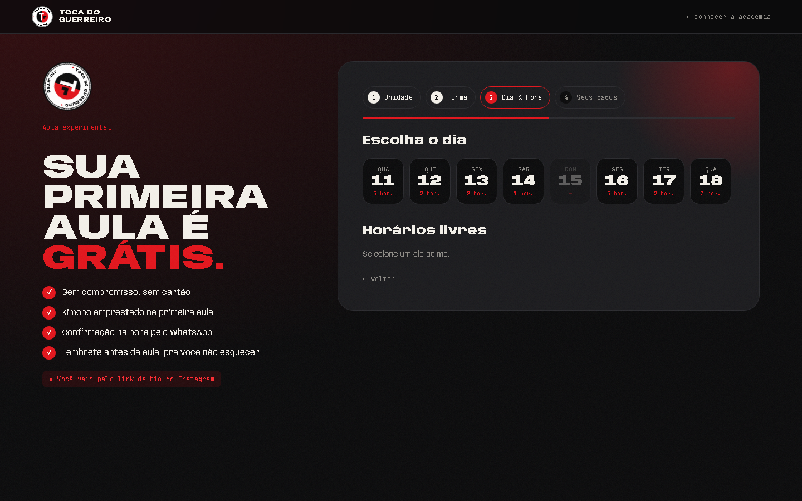
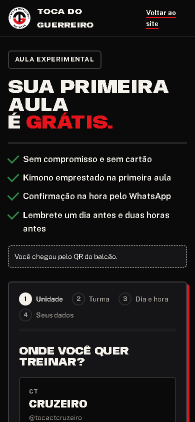

Para Toca do Guerreiro Jiu-Jitsu
Do Insta
Do Insta
pro tatame.
Site da academia, agendamento online da aula experimental grátis e WhatsApp automático — começando pelas unidades Cruzeiro e Santa Lúcia.
Site da academia, agendamento online da aula experimental grátis e WhatsApp automático — começando pelas unidades Cruzeiro e Santa Lúcia.
A Toca já tem o que mais importa: tatame cheio, turma Kids no pódio, uma turma feminina e cinco unidades espalhadas pela cidade. No Instagram, são mais de 3.400 seguidores e quase 700 posts mostrando o dia a dia da academia.
O que falta é um caminho curto entre “gostei desse post” e “tô no tatame”. Hoje esse caminho passa por uma conversa solta no WhatsApp, que depende de alguém da recepção estar livre pra responder.
Esta proposta resolve isso com três peças que já existem como protótipo, prontas pra vocês testarem no celular: um site com a cara da Toca, uma página de agendamento e mensagens automáticas no WhatsApp.
O interessado escolhe unidade, turma e horário sozinho — de dia ou de madrugada.
Resposta na hora e lembrete antes da aula. Menos “oi, sumi” e menos falta na experimental.
Implantação do piloto + /mês de manutenção. Infraestrutura ~R$ 30/mês.
Crio sites sob medida, com animação e identidade própria, e automações que tiram trabalho repetido das costas de quem atende. Projeto recente: o site do estúdio de tatuagem Manoel.ink, com portfólio animado e pedido de orçamento direto no WhatsApp.
O interesse existe. O problema é o caminho até a primeira aula.
Gosta do treino, do pódio, da turma Kids.
Conversa genérica, sem horário na mão.
Se a recepção tá no tatame ou já fechou, a resposta demora. O interesse esfria.
Sem lembrete, a pessoa falta na aula experimental e não volta a chamar.
Cada aluno novo que ficaria pelo caminho e passa a chegar no tatame paga o projeto inteiro em poucas mensalidades.
| Hoje | Com o projeto | |
|---|---|---|
| Marcar a aula experimental | Conversa no WhatsApp, depende da recepção | Sozinho, em 1 minuto, 24h por dia |
| Confirmação | Quando alguém consegue responder | Na hora, automática |
| Falta na aula | Ninguém lembra a pessoa | Lembrete 24h e 2h antes |
| Recepção | Repete horários e endereço o dia todo | Recebe o aluno já agendado |
| Saber o que funciona | Achismo | Relatório por canal e por unidade |

Explica o jiu-jitsu pra quem nunca treinou e leva direto pro horário certo da aula grátis.
Unidade → turma → dia e hora → nome e WhatsApp. É o link da bio e dos QR Codes.
Confirmação, lembretes 24h e 2h antes e aviso à recepção.
Feito sob medida pra Toca. Em vez de efeito bonito, o site tira as dúvidas que seguram o aluno em casa: como é a aula, o que levar, o que é cada faixa. A página vai da faixa branca à preta, como o treino.







Dia, hora, unidade e o que levar, assim que a pessoa confirma.
Com botões “confirmo” e “quero remarcar”.
Com o mapa da unidade. Derruba a falta.
Nome, turma, horário e de onde veio.
Os textos são escritos com vocês: “Oss”, nome do professor, endereço certinho de cada unidade. Horário dos lembretes ajustável.
Mensagem no dia seguinte à aula: “Curtiu o treino? Bora fechar a matrícula?” — o próximo passo natural do funil.
Recomendado: API oficial do WhatsApp (Meta). Número verificado, sem risco de bloqueio, cobrança só por mensagem enviada (centavos).
Cada canal ganha um QR Code próprio. Todos levam pro mesmo agendamento — e a Toca passa a saber qual divulgação traz aluno.
Na recepção de cada unidade. Quem passa na porta agenda sozinho.
Aulões de rua e eventos. O interesse vira agendamento ali mesmo.
🥋 Agende sua Aula Experimental Grátis no Cruzeiro ou Santa Lúcia 👇
🔗 tocadoguerreiro.com.br/agendarTroca a conversa genérica por uma chamada direta.
| Semana | Entrega | De vocês eu preciso |
|---|---|---|
| 1 | Site no ar em endereço de teste, com textos e fotos reais | Horários, fotos, nomes dos professores |
| 2 | Agendamento funcionando, com controle de vagas | Vagas por turma pra aula experimental |
| 3 | WhatsApp automático ligado + treinamento da recepção | Número de WhatsApp e verificação na Meta |
| 4 | QR Codes, artes do display, do banner e do panfleto | Aprovar as artes e mandar pra gráfica |
50% na aprovação · 50% na entrega
| Domínio tocadoguerreiro.com.brRegistro.br, R$ 40 por ano | R$ 3,33/mês |
| Hospedagem e banco de dadosPlanos grátis no piloto | R$ 0 |
| WhatsApp oficial (Meta)~150 agendamentos × 4 mensagens | ~R$ 26/mês |
| Total estimado | ~R$ 30/mês |
Serviços de terceiros estimados em novembro de 2026, com dólar a R$ 5,50; podem variar com o câmbio e são confirmados antes do início.